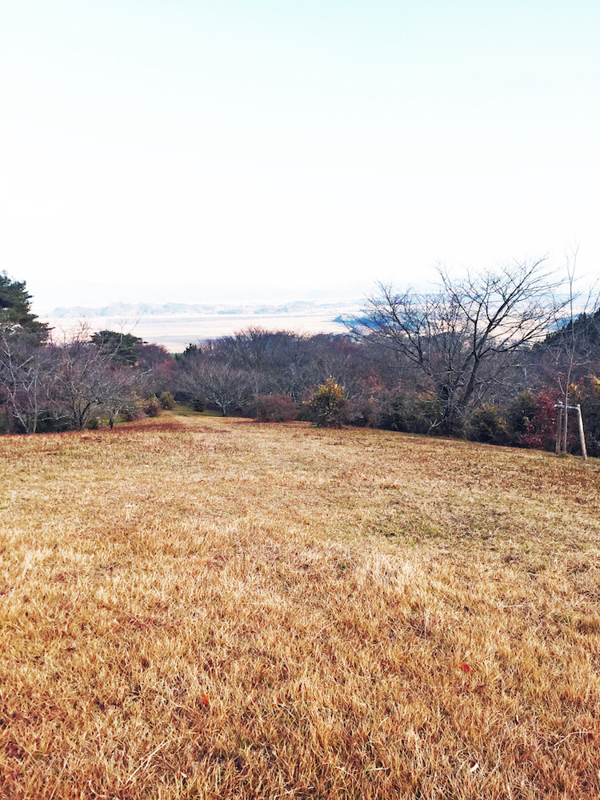
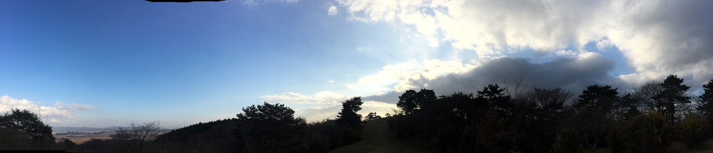
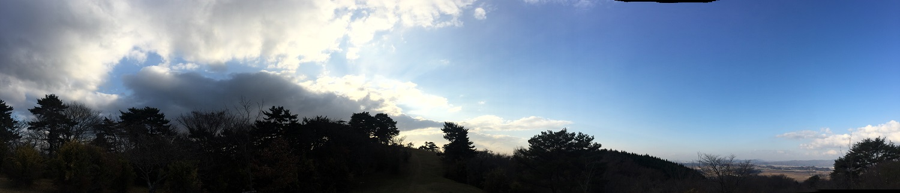

旭山

宮城県石巻市北村にある県立自然公園であり、正式名称は県立自然公園旭山。標高174メートルの山で、春にはサクラやツツジが咲き、秋は紅葉に彩られるとても魅力のある山です。 ハイキングやちょっとしたピクニックなどに最適です。
- 
- 
宮城県石巻市北村にある県立自然公園であり、正式名称は県立自然公園旭山。標高174メートルの山で、春にはサクラやツツジが咲き、秋は紅葉に彩られるとても魅力のある山です。 ハイキングやちょっとしたピクニックなどに最適です。